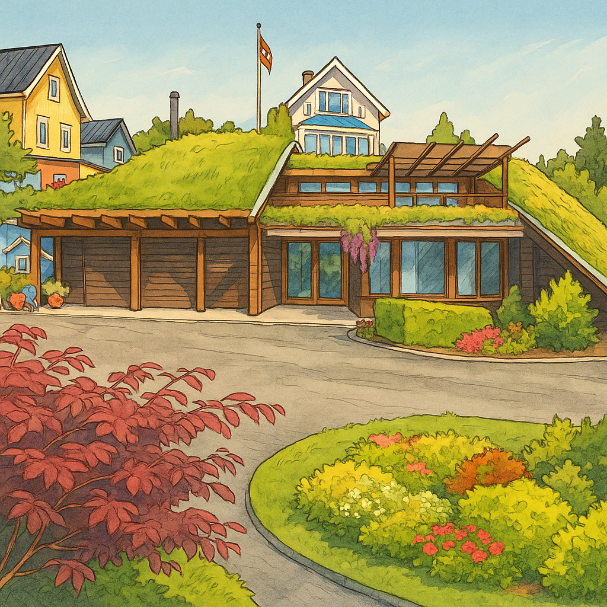
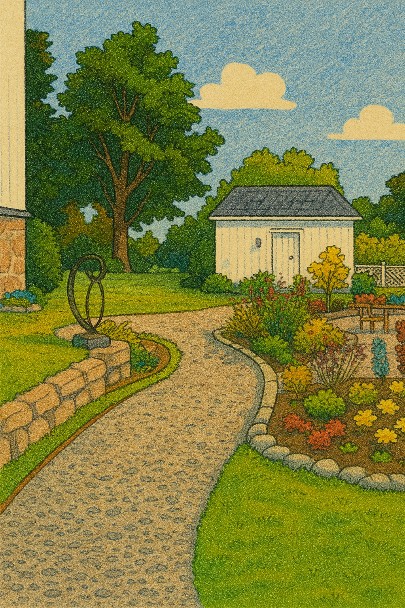
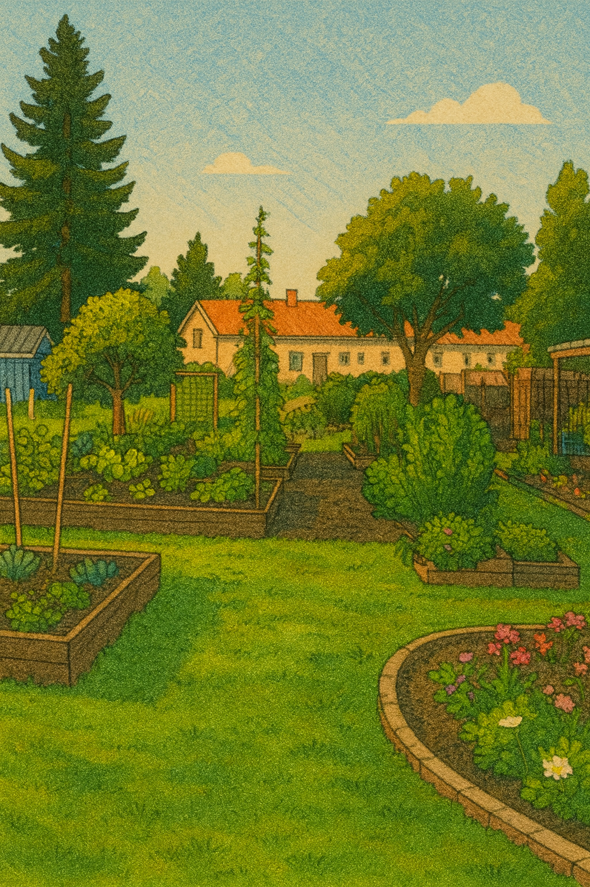

Årets hage 2025
Oslo kommune deler igjen ut sin tradisjonsrike hagepris – en hyllest til de som gjør byen grønnere, vakrere og mer menneskevennlig. Her teller ikke størrelsen, men engasjementet, fellesskapet og kjærligheten til det som spirer.

Om prisen
Har du gatas grønneste og mest fargesprakende balkong? Kjenner du til et borettslag som har laget ei blomstereng og blitt et hyggelig møtested for naboene? Eller kanskje et hageprosjekt som driver med kompostering, urtedyrking eller parsellhager i miniformat?
Både store og små prosjekter er velkomne. Oslo kommune ønsker å påskjønne dem som bidrar til at byen blir grønn, vakker, miljøvennlig og menneskevennlig. Her er det innsatsen og bidraget som teller – ikke størrelsen på hagen.
Hageprisen ble for første gang delt ut i 1921, da med mål om å premiere «rasjonell hagebruk». Over hundre år senere lever verdiene videre – men med et utvidet syn på hva hagebruk kan være. Interessen blant Oslos innbyggere har aldri vært større: Hagen har blitt både møteplass, økosystem og kunstform.
Kategorier og kriterier
Alle typer hager er velkomne til å delta – fra balkonger og små bakgårder til parsellhager, borettslag og fellesområder. Hovedkriteriet er at hagen er synlig eller tilgjengelig for allmennheten, enten fordi man kan se inn fra offentlig vei, besøke stedet, eller fordi prosjektet involverer fellesskapet.
Mulige kategorier inkluderer:
- Årets felleskapshage
- Årets privathage
- Mest naturvennlige eller bærekraftige hage
- Mye på liten plass
- Årets borettslag/sameie
- Åpen kategori
Vinnerne får en spesialdesignet bronseplakett, innrammet diplom og invitasjon til en treretters middag med ordføreren under høstens prisutdeling.
Årets vinnere
I 2025 har juryen kåret vinnere som viser bredden i byens grønne initiativ – fra takhager til parsellprosjekter. Totalt seks hager ble hedret i år, inkludert publikumsfavoritten.
- 🌸 Årets privathage: Den moderne hagen på Grorud
- 🌸 Årets felleskapshage: Kjøkkenhagen på Bogstad gård
- 🌸 Årets mest bærekraftige: Beredskapshagen på Borgen
- 🌸 Årets mye på liten plass: Den lille frodige på Bygdøy
- 🌸 Åpen kategori: Takhagen på Grefsen
- 🌸 Folkets favoritt: Kjøkkenhagen på Bogstad gård
Takhagen på Grefsen
Årets vinner i åpen kategori kombinerer arkitektur og natur på en spennende og unik måte. Det enorme grønne taket strekker seg som en hage over huset, der blomster, urter og bærbusker danner et levende landskap i miniatyr. Juryen lar seg begeistre over innsatsen fra eierne og samspillet mellom bygg og natur.
Den moderne hagen på Grorud
Grorud-hagen utmerker seg ved å kombinere historisk respekt med estetisk skjønnhet og økologisk bevissthet. Her møtes klassiske linjer og moderne bærekraft i et helhetlig uttrykk som gir hagen karakter og sjel.
Kjøkkenhagen på Bogstad gård
Årets felleskapshage og folkets favoritt. Bogstads kommunale kjøkkenhage drives av Bymiljøetaten og engasjerte frivillige. Hagen er et levende læringsrom der grønnsaker, urter og blomster dyrkes side om side. Juryen fremhever den pedagogiske verdien og den inkluderende atmosfæren som gjør hagen til et møtested for både barn og voksne.
En grønn tradisjon som vokser videre
Oslo kommunes hagepris viser at byens grønne lommer ikke bare er pynt, men pustehull og møteplasser som former en ny bykultur. Etter over hundre år fortsetter prisen å inspirere – og minner oss om at det vakreste i byen ofte er det som spirer mellom husene.
Av Mats Gran
Paradisavisa